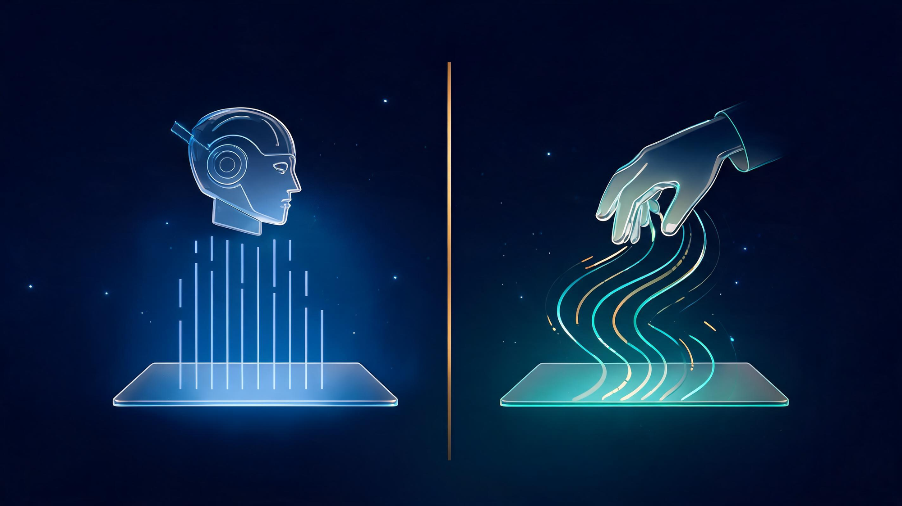
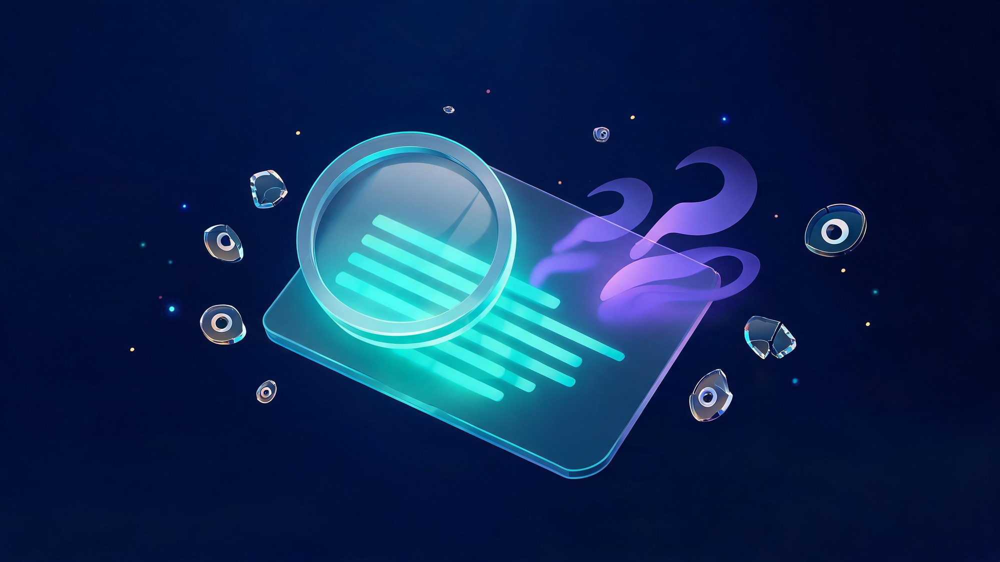

ChatGPT for Writing in 2026: What Actually Works Now
ChatGPT for writing is the highest-volume how-to question in AI right now - and in 2026 the answer changed twice in three months. Sam Altman admitted OpenAI "screwed up" writing quality in GPT-5.2, then shipped GPT-5.6 Sol with a writing-focused fix and quietly expanded the free Luna model to everyone. This guide covers what actually changed, the four-stage workflow professional writers use, 15 copy-paste prompts, and the honest answer on detectors, skills and free-vs-paid.
🔄 Last updated October 18, 2026: covers the GPT-5.2 writing backlash, the GPT-5.6 Sol/Luna release (August 2026), the style-mimicry rollout, and fresh detector findings from September 2026.
Quick answer
ChatGPT works best as a digital assistant for brainstorming, drafting, editing and personalizing - not as a replacement writer. In 2026: GPT-5.6 Sol fixed the flat GPT-5.2 prose after Altman's public admission, the free tier now runs GPT-5.6 Luna, a style-mimicry feature learns your voice from connected apps, and the pro pattern is a four-stage workflow - brainstorm, draft, edit, humanize - with your own voice making the final call. The 15 copy-paste prompts below use the context-role-constraints-format framework.
In this guide
- What Changed in 2026: The GPT-5.2 Backlash and the GPT-5.6 Fix
- Do Professional Writers Actually Use ChatGPT?
- The 4-Stage Writing Workflow That Works
- 15 Copy-Paste ChatGPT Writing Prompts
- Creative Writing: Stories, Novels and Canvas
- Content and Marketing Writing
- Free vs Paid: What GPT-5.6 Luna Actually Gets You
- Will ChatGPT Weaken Your Writing Skills?
- AI Detectors: What They Really Catch
- ChatGPT vs Gemini for Writing: Quick Take
- FAQs
What Changed in 2026: The GPT-5.2 Backlash and the GPT-5.6 Fix
Something unusual happened this year: OpenAI publicly admitted its writing got worse. After the GPT-5.2 rollout, writers across platforms complained the prose had turned flat and formulaic - and Sam Altman said OpenAI "screwed up" the writing quality. TechRadar covered the same admission, and the apology became a mini-case-study in how much the "ChatGPT for writing" audience had grown: search interest in the topic spiked to roughly five times its early-2026 baseline between July and August.
The fix shipped fast. In August, OpenAI announced an improved GPT-5.6 Sol in ChatGPT - a writing-quality-focused update - and expanded GPT-5.6 Luna to free users with unlimited chats. For anyone using ChatGPT for writing, this is the practical 2026 reality: the model you get today is measurably better at prose than the one from twelve months ago, and the free tier is no longer a demo.
The third change is quieter but bigger for writers: ChatGPT can now learn your writing style from your connected apps. As BleepingComputer reported, the feature lets ChatGPT reference your emails and documents to mimic how you actually write - rolling out to users through 2026. More on what that means (and what it does not fix) in the humanize section below.
Do Professional Writers Actually Use ChatGPT?
Yes - but not the way the headlines imply. OpenAI's own professional-writer use-case page describes five uses: brainstorming, editorial feedback, word-finding, research and creative collaboration. Notice what is missing: ghost-writing the finished piece. The professionals quoted across publishing and marketing trade press in 2026 describe the same pattern - the model handles the mechanical layer, the human keeps judgment, voice and final calls.
The evidence backs the productivity claim. A study covered by MIT Technology Review found that people using ChatGPT for writing tasks were more productive and produced higher-quality work than those who did not - with the biggest gains for the weakest first drafts. The Guardian ran a human-vs-ChatGPT writing competition in February 2026; the AI was competent, generic and safe - which is exactly the gap the workflow below is designed to close.
The 4-Stage Writing Workflow That Works
Every strong ChatGPT writing workflow in 2026 is a variation of the same four stages. Skipping stages is what produces the robotic output everyone complains about.
Stage 1 - Brainstorm (never skip)
Before any drafting, use ChatGPT to generate angles, outlines and counter-arguments. Ask for ten ideas, then ask it to attack the three best ones. You get a wider idea-space than solo thinking, and you stay the editor.
Stage 2 - Draft (feed it raw material)
The biggest mistake is prompting "write me an article." The workflow that works: give ChatGPT your notes, bullets, transcripts or research, and ask it to structure them into a first draft. The draft is raw material - nobody ships it unedited.
Stage 3 - Edit (where the quality lives)
Switch roles: now ChatGPT is your editor, not your writer. Ask for flow, grammar and readability passes, then ask it to question your weakest paragraph. This stage produces more improvement than any prompt trick.
Stage 4 - Humanize (inject the voice)
Finally, make it sound like you: paste samples of your own writing, ask for your tics and rhythm to be matched, add your own examples and opinions, and rewrite anything generic yourself. This is also where the new style-mimicry feature helps - it pre-loads the model with your voice, but your final edit still beats it.
15 Copy-Paste ChatGPT Writing Prompts
Every strong writing prompt has four parts: context (who it is for), role (who the AI should be), constraints (length, tone, avoid-list) and format (the output shape). Here are 15 built on that framework - swap the bracketed parts for yours.
| Prompt | Best For |
|---|---|
| "Act as a [genre] developmental editor. Here is my draft: [paste]. Give the 5 biggest structural problems, in order of severity, with a fix for each. Do not rewrite yet." | Book-length edits |
| "You are my writing sparring partner. Attack this argument: [paste]. Find the 3 weakest claims, the strongest counter-argument, and what evidence would fix them." | Opinion pieces, essays |
| "Here are my raw notes: [paste]. Turn them into a structured outline with H2s and one-line summaries per section. Flag gaps where I need more evidence." | Blog posts, reports |
| "Rewrite this paragraph 3 ways: plain, persuasive, playful. Keep every fact identical, change only rhythm and word choice: [paste]." | Style exploration |
| "Here are 2 samples of my writing: [paste 1] [paste 2]. List my stylistic tics - sentence length, transitions, vocabulary - so I can see my own patterns." | Voice awareness |
| "Match this voice exactly: [paste sample]. Now draft [section] on [topic] in that voice, using the facts I give you: [facts]. No new claims." | Voice-consistent drafts |
| "Give me 10 title options for this piece: [paste or summary]. For each, one line on who would click it and why. No clickbait." | Headlines |
| "You are a skeptical reader seeing this intro for the first time. Where exactly do you stop reading, and why? Be brutal: [paste]." | Intros and hooks |
| "Here is my transcript: [paste]. Extract the 5 quotable moments verbatim, then summarize the rest in bullets. Keep my phrasing in the quotes." | Interviews, podcasts |
| "Ask me 10 questions a domain expert would ask about [topic] that my draft does not answer: [paste]. Rank by how embarrassing the gap is." | Pre-publish audit |
| "Act as a fiction plot doctor. Here is my story premise: [paste]. Give 3 ways to raise the stakes, each with a one-sentence sketch of the new midpoint scene." | Stories, novels |
| "Write the opening paragraph of a [genre] story in second person, present tense, ending on an unanswered question. Theme: [theme]. Under 80 words." | Creative kicks |
| "You are a content strategist. Here is my product: [desc] and audience: [desc]. Give 8 article ideas mapped to the buyer journey: 3 awareness, 3 comparison, 2 decision." | Content marketing |
| "Rewrite this marketing copy in the voice of a helpful expert, not a salesperson. Remove every superlative. Keep the call to action: [paste]." | Landing pages, emails |
| "Summarize this source in 5 bullets, each with a number or quote I can cite: [paste]. Mark anything ambiguous as UNCLEAR." | Research |
Creative Writing: Stories, Novels and Canvas
Creative work is where ChatGPT divides opinion hardest, and where the prompt framework matters most. The model is genuinely useful for what one 2026 academic-writing review called the scaffolding layer: premise pressure-testing, plot-hole hunting, character-interviews and "give me three ways this scene could go wrong." It is weak at sustained original voice - long fiction drafted end-to-end reads samey, which the writing-competition coverage confirmed.
The dedicated Canvas interface changed the practical workflow for novelists and long-form writers: instead of regenerating whole documents, you highlight a passage and ask for targeted rewrites while the rest of the manuscript stays put. For academic and thesis writers, the same highlight-and-edit loop is the safest pattern - it keeps your argument yours while the model handles local prose fixes.

Content and Marketing Writing
For content teams, ChatGPT in 2026 is the drafting and repurposing engine: one webinar becomes a blog post, five social posts and a newsletter - all from the transcript prompt above. The 2026 tool landscape (dozens of AI writing suites reviewed across the trade press) mostly wraps the same models with SEO add-ons; what still separates good output is the brief quality and the human edit, not the wrapper.
Two brand-safety notes from the field: first, always give the model your style guide as a constraint - "remove every superlative" outperforms "sound professional." Second, keep a human named author on everything: bylines with real accountability both satisfy search-quality expectations and give readers someone to trust.
Free vs Paid: What GPT-5.6 Luna Actually Gets You
The August 2026 update made this decision easier: free users now get GPT-5.6 Luna with unlimited chats - which covers everyday writing: emails, drafts, edits, brainstorming at usable quality.
| Capability | Free (Luna) | Plus (Sol + priority) |
|---|---|---|
| Everyday writing and editing | Fully covered | Fully covered |
| Best writing model (GPT-5.6 Sol) | Limited access | Priority access |
| Usage limits | Generous, fair-use | Higher caps |
| Style-mimicry from your apps | Rolling out | Rolling out |
| Canvas long-document editing | Available | Available |
| Newest features first | Later | First |
The honest recommendation: start free, and only upgrade when you hit limits on real work. The writing quality gap between Luna and Sol is real but narrow; the cap difference is what you are actually paying for.
Will ChatGPT Weaken Your Writing Skills?
The fear is real - the Quora and Reddit threads asking "will it harm my writing abilities?" are among the most-visited in the topic. The honest 2026 answer: it depends on which layer you outsource. The productivity research shows gains when the model handles mechanics - grammar, restructuring, option-generation - while the human keeps making the decisions. Skill atrophy shows up when people outsource the thinking itself: forming arguments, choosing evidence, taking positions.
The practical rule: never let ChatGPT be the first voice on a piece. Draft your thesis yourself, even badly. Use the model to pressure-test and polish. Writers who follow that order report the opposite of atrophy - the model's relentless questions have made their first drafts tighter.
AI Detectors: What They Really Catch
Detector anxiety peaked in September 2026 when Business Insider ran a month-long experiment with an AI detector - scanning their own human-written work and colleagues' writing - and the writer described the results as horrifying, largely because of false positives on genuine human text.
That matches the technical reality: detectors measure statistical patterns, not authorship. Uniform sentence rhythm, low-surprise word choice and hedged claims score "AI" - whether a human or a model produced them. Detector scores are one weak signal, never a verdict; the educational-ethics coverage through 2026 increasingly says the same.

ChatGPT vs Gemini for Writing: Quick Take
The comparison searches keep growing, so here is the short version: Gemini's strength is research-flavored drafting with fresh web grounding and Workspace integration; ChatGPT's strength is prose quality (post-GPT-5.6), the Canvas editing loop and the style-mimicry feature. For long-form voice-driven writing, ChatGPT is the default pick in 2026; for heavily source-linked explainers, run the brief through both and keep the better skeleton. The workflow - not the model - remains the deciding factor.
FAQs
Do professional writers use ChatGPT?
Yes, selectively - for brainstorming, editorial feedback, word-finding, research and creative collaboration, per OpenAI's own professional use-cases. The finished piece keeps a human author, because judgment and voice are the professional's product.
Is ChatGPT good for writing?
It is strong on structured, checkable layers - outlines, clarity edits, summaries, options - and an MIT-hosted study found users produce higher-quality work faster. It is weak on original argument and lived experience, so the best results come from the human-led four-stage workflow.
What are the best ChatGPT prompts for writing?
The ones with context, role, constraints and format - like the 15 copy-paste prompts in this guide. "Write me an article about X" fails because it skips three of the four parts.
Can ChatGPT write like a human?
It can match surface patterns and, with the new style-mimicry feature, learn from your connected apps - but detectors and readers still catch the tells. Your own examples, opinions and final edit are what make output genuinely human.
Is ChatGPT good for essay writing?
For structure, feedback and language editing - yes. For ghost-writing submissions - risky and increasingly detectable, and the education debate of 2026 has made institutions far more sophisticated about it. Use it as a tutor, not a ghostwriter.
Will ChatGPT weaken my writing skills?
Only if you outsource the thinking. Offloading mechanics while you keep making decisions appears to strengthen output quality; letting the model form your arguments is where skill erodes.
Can AI detectors detect ChatGPT writing?
Unreliably - Business Insider's September 2026 experiment found serious false positives on human writing. Treat detector scores as one weak signal, never a verdict.
Is ChatGPT free to use for writing?
Yes - the free tier runs GPT-5.6 Luna with generous limits after August 2026, covering everyday writing. Plus adds higher caps and priority access to the best model, which matters mainly for heavy daily use.
Sources
Sources & References
- openai.com - Improving GPT-5.6 Sol in ChatGPT (Aug 2026)
- 9to5mac.com - GPT-5.6 Sol and unlimited free chats for Luna (Aug 6, 2026)
- searchenginejournal.com - Sam Altman says OpenAI "screwed up" GPT-5.2 writing quality
- techradar.com - Altman admits OpenAI "screwed up" ChatGPT writing
- bleepingcomputer.com - ChatGPT connects to your apps to mimic writing style
- openai.com - Writing with AI: five ways professional writers use ChatGPT
- technologyreview.com - Study: ChatGPT can turn bad writers into better ones
- theguardian.com - I challenged ChatGPT to a writing competition (Feb 25, 2026)
- businessinsider.com - I used an AI detector for a month (Sep 2026)
- oneusefulthing.org - How to use ChatGPT to boost your writing
Keep exploring Veritya Daily's AI coverage: see which careers are exposed in the IPPR three-jobs analysis, understand the workforce angle in the Scale AI layoffs verification, compare builders in the AI agent platforms guide, and check what the models cost in IBM Quantum's pay-as-you-go pricing.